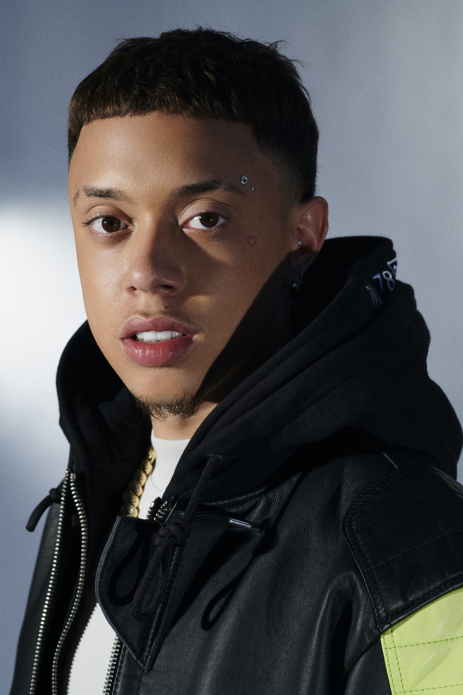

Coisas
Coisas para se livrar do tédio
- Organizar a casa
- Fazer cursos onlines
- Praticar exercícios físicos
- Atualizar sua lista de livros, filmes e/ou séries atrasadas
- Aprender a cozinhar algo novo ou voltar a cozinhar o que mais gosta
Ranking FIFA
- Brasil
- Argentina
- França
- Bélgica
- Inglaterra
As 3 melhores músicas de cada artista da 30PRAUM (Youtube)
- Matuê

- Teto
- WIU
5 gírias em inglês mais faladas por jovens americanos
- Squad ou Crew
- As duas gírias querem dizer a mesma coisa: quando um adolescente americano se refere ao seu squad ou crew, ele está fazendo uma menção ao seu grupo de amigos – sua “galera”, “turma”, “trupe”. As palavras squad e crew, traduzidas literalmente, querem dizer “pelotão” e “equipe técnica”.
- Bae
- BAE é uma sigla que abrevia Before Anyone Else. Em português, a frase significa “antes de qualquer outra pessoa”. Quando um jovem chama outro de bae, pode apostar que tem romance envolvido! Essa gíria, traduzida ao pé da letra, significa “namorado(a)”.
- Life
- Para quem já estuda e entende um pouco mais de inglês, não é novidade que a palavra life significa "vida". Nas gírias usadas pelos jovens americanos, essa palavra continua com o mesmo significado, mas é usada para fazer referência a algo que é muito gostoso em todos os sentidos, como se desse sentido à vida.
- Roast
- A palavra roast, isolada, em português, quer dizer “assado”. Porém, quando usada como uma gíria jovem entre os americanos, roast se torna uma expressão usada para designar situações em que alguém é insultado e se sente ofendido.
- On fleek
- Sabe quando você vê algo com uma aparência realmente incrível? É nesse momento que os jovens americanos usam a palavra fleek. Por ser uma expressão, a palavra não tem uma tradução literal do inglês para o português, mas, se um dia você quiser enaltecer um americano e fazer com que ele se sinta maravilhoso, pode apostar nesse elogio!